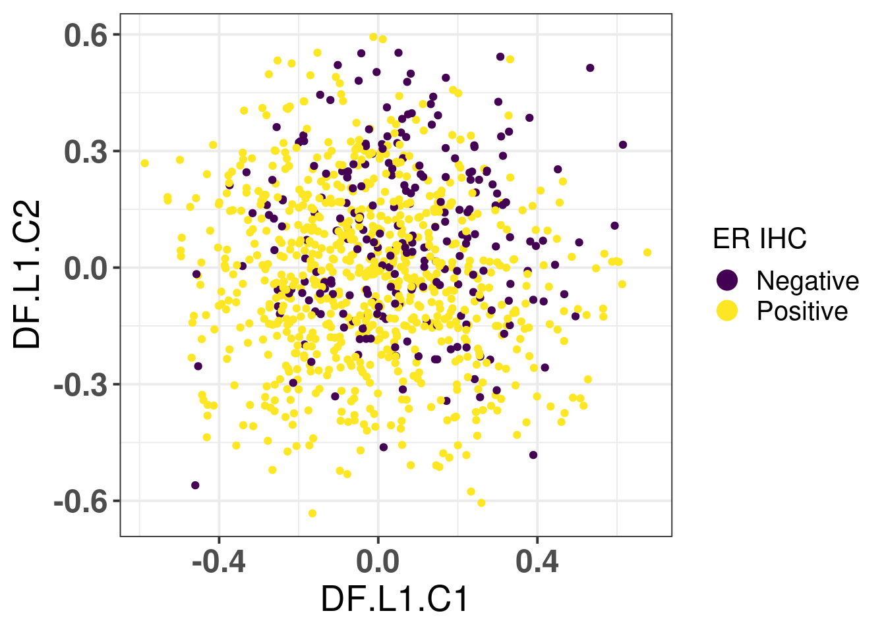
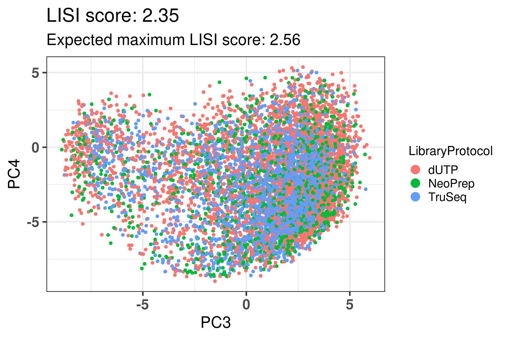

We know that the first two components of PCA correspond to cohort and platform specific effects. We can apply combat from the sva package on the unnormalized data.
We now check what is the relationship between the PC1 and PC2 from combat to the actual PCs from EMBER.
And the spearman correlation is for PC3 and PC1:
Figure 8.1: ?(caption)
In a nutshell, the EMBER position corresponds to what is obtained by combat, with the advantage that we can actually use the embedding for new samples. Combat is restricted to the samples inputted.
8.2 Autoencoders
H2O is not running yet, starting it now...
Note: In case of errors look at the following log files:
/tmp/RtmpbK2OEd/file1cb442a84b1ba/h2o_ronchi_started_from_r.out
/tmp/RtmpbK2OEd/file1cb4422a3365b8/h2o_ronchi_started_from_r.err
Starting H2O JVM and connecting: .. Connection successful!
R is connected to the H2O cluster:
H2O cluster uptime: 1 seconds 340 milliseconds
H2O cluster timezone: Europe/Zurich
H2O data parsing timezone: UTC
H2O cluster version: 3.44.0.3
H2O cluster version age: 4 months and 18 days
H2O cluster name: H2O_started_from_R_ronchi_ige645
H2O cluster total nodes: 1
H2O cluster total memory: 20.00 GB
H2O cluster total cores: 32
H2O cluster allowed cores: 32
H2O cluster healthy: TRUE
H2O Connection ip: localhost
H2O Connection port: 54321
H2O Connection proxy: NA
H2O Internal Security: FALSE
R Version: R version 4.2.0 (2022-04-22)
Features are the columns and the rows are the samples. So for the genomic data we have to transpose it.
Figure 8.2: ?(caption)
Just using the autoencoder in the data does not work.
We now use on the normalized data instead on 4 units in the hidden layer.
Figure 8.3: ?(caption)
And now coloring by er status. It is not really able to completely distinguish the ER+ and ER- samples.

Figure 8.4: ?(caption)
Figure 8.5: ?(caption)
We do a pairsplot coloring by cohort to see where the distinction between cohorts is coming from.
Figure 8.6: ?(caption)
And now coloring by ER status instead.
Figure 8.7: ?(caption)
Perhaps now if we include more layers instead and use 4 components.
In terms of mean squared error all the models are very similar to each other. And based on the previous results it seems that by using
8.3 Mixing analysis
In this section we try to understand what is the minimum number of genes necessary to be able to distinguish ER+ and ER- BC samples. We select the top 10, 25, 50, 100, 200, 500, 750, 1000, 2500, 5000 and all the genes and try to classify the samples bewteen ER+ and ER- based on their position of the third component. This should give an idea of how good the embedding is based on the number of genes.
[1] "Nb of genes: 10"
Total number of stable genes: 44
Total number of genes: 54
Number of samples: 1005
Total number of stable genes: 44
Total number of genes: 54
Number of samples: 1868
[1] "Nb of genes: 25"
Total number of stable genes: 44
Total number of genes: 69
Number of samples: 1005
Total number of stable genes: 44
Total number of genes: 69
Number of samples: 1868
[1] "Nb of genes: 50"
Total number of stable genes: 44
Total number of genes: 94
Number of samples: 1005
Total number of stable genes: 44
Total number of genes: 94
Number of samples: 1868
[1] "Nb of genes: 100"
Total number of stable genes: 44
Total number of genes: 144
Number of samples: 1005
Total number of stable genes: 44
Total number of genes: 144
Number of samples: 1868
[1] "Nb of genes: 200"
Total number of stable genes: 44
Total number of genes: 244
Number of samples: 1005
Total number of stable genes: 44
Total number of genes: 244
Number of samples: 1868
[1] "Nb of genes: 500"
Total number of stable genes: 44
Total number of genes: 544
Number of samples: 1005
Total number of stable genes: 44
Total number of genes: 544
Number of samples: 1868
[1] "Nb of genes: 600"
Total number of stable genes: 44
Total number of genes: 644
Number of samples: 1005
Total number of stable genes: 44
Total number of genes: 644
Number of samples: 1868
[1] "Nb of genes: 650"
Total number of stable genes: 44
Total number of genes: 694
Number of samples: 1005
Total number of stable genes: 44
Total number of genes: 694
Number of samples: 1868
[1] "Nb of genes: 700"
Total number of stable genes: 44
Total number of genes: 744
Number of samples: 1005
Total number of stable genes: 44
Total number of genes: 744
Number of samples: 1868
[1] "Nb of genes: 750"
Total number of stable genes: 44
Total number of genes: 794
Number of samples: 1005
Total number of stable genes: 44
Total number of genes: 794
Number of samples: 1868
[1] "Nb of genes: 1000"
Total number of stable genes: 44
Total number of genes: 1044
Number of samples: 1005
Total number of stable genes: 44
Total number of genes: 1044
Number of samples: 1868
[1] "Nb of genes: 2500"
Total number of stable genes: 44
Total number of genes: 2544
Number of samples: 1005
Total number of stable genes: 44
Total number of genes: 2544
Number of samples: 1868
[1] "Nb of genes: 5000"
Total number of stable genes: 44
Total number of genes: 5043
Number of samples: 1005
Total number of stable genes: 44
Total number of genes: 5043
Number of samples: 1868
[1] "Nb of genes: 8248"
Total number of stable genes: 44
Total number of genes: 8278
Number of samples: 1005
Total number of stable genes: 44
Total number of genes: 8278
Number of samples: 1868
Figure 8.8: ?(caption)
Using less than 25 genes mixes well the cohorts in the first two components. When using more than 50 genes the mixing is already lost in the first two components. So what we actually want is a mixing in just one of the pairs of components, either PC1+PC2 or PC3+PC4 while there is no mixing in the other pair of component. By analysing visually this happens when using at least 1000 genes.
Due to the difference in cohort sizes, METABRIC has 648 samples and TCGA 352, the expected iLISI coefficient is:
[1] 1.84
The expected value for the iLISI coefficient when calculating for ER status is:
[1] 1.59
And the plot below shows the iLISI numbers for each combination of PC1+PC2 and PC3+PC4 annotated by the total number of genes. An integration by ER status means that the combination of components is not capturing the biology.
Figure 8.9: ?(caption)
8.4 Stable genes
One of the raised issues is that the average ranking of the stable genes might depend on phenotypes. Here we show that the distribution of average of stable genes is stable across different phenotypes, such as ER status and molecular subtype.
First we plot by ER status in both METABRIC and TCGA.
Figure 8.10: ?(caption)
8.5 Scaling
We now show the embedding using no scaling, i.e., just log FPKM and median intensity, using the qPCR like normalization and using a z-normalization on the sample level.
Figure 8.11: ?(caption)
And now we compare the iLISI scores of the qPCR-like normalization and z-scaling as well.
Figure 8.12: ?(caption)
8.6 Tumor purity: statistical tests
One of the points raised by the reviewers was about the statistics on the differences between the principal components stratified by molecular subtype. We perform ANOVA followed by a Tukey post hoc test.
In the cBioportal one can check the clinical data directly with all the information. When hovering over the column names it is possible to obtain the column names from the data available when downloaded. For example, the ER percentage is available from the sample in the diagnostics. Ki67, similarly. In general the metastasis do not have ER percentage.
We now try to understand if samples are coming from core biopsy, surgical procedures or from a metastasis setting. To start with that, we look at a single patient ID that has two breast samples.
For patient with ID MBCProject_4MF1FlFQ, there are two samples. One at time of diagnosis, core biopsy, and the other at a mastectomy after 114 days of treatment. The column CALC_TREATMENT_NAIVE tells if the sample is treatment naive or not, BX_TYPE corresponds to the type of surgery (PATH Procedure Type column on cBioPortal).
We now look at another patient (MBCProject_5gHasou8):
The results are similar for this patient too. We now move on and use EMBER on all available samples and then compare these matched samples.
Total number of stable genes: 44
Total number of genes: 1037
Number of samples: 153
We show all the samples from the project below on top of TCGA, SCAN-B and METABRIC.
Figure 8.14: ?(caption)
And now stratified by either local metastasis/primary sample or by distant metastasis.
Figure 8.15: ?(caption)
8.8 TNBC and ER+
Here we use another cohort with both ER+ and ER- samples coming from FFPE with two different library preparation protocols: Illumina-Access and Nugen-Ovation.
Total number of stable genes: 44
Total number of genes: 1022
Number of samples: 21
We now show the samples highlighted on top of EMBER space with samples from TCGA and METABRIC.
Figure 8.16: ?(caption)
8.9 SCAN-B library protocol
SCAN-B has 3 different types of samples based on their library protocol, namely: dUTP, NeoPrep and TruSeq.
Here we show that EMBER is capable of fully removing any effects associated to library protocol.

Figure 8.17: ?(caption)
8.10 Scaling before doing PCA
When developing EMBER we did not center or scale the data, as the gene expressions after normalization all had the same range. Here we compare what happens when doing the centering followed by the scaling and then applying PCA.
To understand the effect of centering and scaling the data prior to applying PCA, we compared the loadings of PC1 from EMBER to the average of the genes in the normalized data (a). The correlation between these two variables is -1, showing that PC1 corresponds to centering. When comparing the loadings with PC2 and the standard deviation of genes after centering, the higher loadings in absolute value are correlated with higher standard deviation (b).
Next, we show that PC1 and PC2 are correlated with PC1 obtained after centering and scaling the data (c), showing that EMBER’s PC1 and PC2 is automatically centering and scaling the data at the same time removing batch effects. In order to confirm that no biological information is lost when performing PCA on the uncentered and unscaled data, we compared EMBER’s PC3 and PC4 with PC2 and PC3 from the scaled data respectively (d and e). The correlation is 1 in both cases for both cohorts: METABRIC and TCGA. We show that there is no need to center and scale prior to applying PCA in EMBER’s context.
Figure 8.18: ?(caption)
Source Code
# Revision```{r}renv::restore()library(tidyverse)library(ggplot2)library(ggprism)library(PCAtools)library(singscore)library(SummarizedExperiment)library(survival)library(genefu)library(caret)library(sva)library(lisi)library(rstanarm)library(rstatix)library(DESeq2)library(h2o)library(dslabs)source("../R/utils.R")source("../R/first_run.R")# the following script load all data necessary to run the chunks.# the data is generated from this quarto document itself, therefore# if you are running this documents the first time and don't have the# files, comment the following lines. Moreover, if this is your first# time running the document, you should run all chunks, to generate # all the necessary files, if you don't have them. Once all files # are saved and available in the respective folder, the following# lines can be executed. if (first_run){ load_at_setup <-FALSE} else { load_at_setup <-TRUE}name_document <-"revision"sapply(paste0("../../results/", c("plots", "rds_files", "tables"), "/", name_document), dir.create,showWarnings =FALSE,recursive =TRUE)source("../R/load_rds_files.R")# by setting the dev to png and pdf, this saves the figures in a specific# folder in both formats. moreover, since png is coming first, it shows# this figure when rendering the html. What is nice about this is that it# inherits the properties from the chunk to save the figure, so no need# to use ggplot2::ggsave to save the plots. this also works knitr::opts_chunk$set(dev =c('png', 'pdf'))options(bitmapType ='cairo')datasets$poetic$sample_name <-colnames(datasets$poetic)mol_subs <-c("basal"="Basal-like", "her2"="HER2-enriched", "lumb"="LumB", "luma"="LumA", "normal"="Normal-like","claudin-low"="Claudin-low")ggplot2::theme_set(new = ggplot2::theme_bw())```## Comparing to combat's performanceWe know that the first two components of PCA correspond to cohort and platformspecific effects. We can apply combat from the sva package on the unnormalizeddata.```{r}all_datasets <-mapply(function(sum_exp, which_exp){ SummarizedExperiment::assay(sum_exp, which_exp)[rownames(pca_fit$loadings), ] },sum_exp = datasets[c("tcga", "metabric")],which_exp = which_exp[c("tcga", "metabric")]) %>%Reduce(dplyr::bind_cols, x = .)training_dataset <- all_datasets[, rownames(pca_fit$rotated)]batch_training <-ifelse( stringr::str_starts(colnames(training_dataset), "TCGA"),"tcga","metabric")combat_training <- sva::ComBat(training_dataset, batch_training)``````{r}pca_out_combat <- PCAtools::pca( combat_training, metadata =data.frame(sample_name =colnames(combat_training) ) %>% dplyr::inner_join(., df_pca, by ="sample_name") %>%`rownames<-`(.$sample_name) %>% .[colnames(combat_training), ])```We now check what is the relationship between the PC1 and PC2 from combat to the actual PCs from EMBER. ```{r}combat_results <- pca_out_combat$metadatacombat_results[, paste0("combat_PC", 1:1000)] <- pca_out_combat$rotated```And the spearman correlation is for PC3 and PC1: ```{r}pc3_cor <-cor.test( combat_results$PC3, combat_results$combat_PC1,method ="spearman")pc4_cor <-cor.test( combat_results$PC4, combat_results$combat_PC2,method ="spearman")``````{r, fig.width=10, fig.height = 4}#| label: fig-combat-comparisonpc3_comp <- combat_results %>% ggplot2::ggplot(aes(x = PC3, y = combat_PC1, color = cohort)) + ggplot2::geom_point() + ggplot2::geom_smooth(method ="lm",formula ="y~x" ) + ggplot2::theme_bw(base_size =15) + ggplot2::annotate(geom ="label", x =3, y =30, label =paste0("Cor: ", format(pc3_cor$estimate, digits =2)) ) + ggplot2::labs(x ="EMBER PC3",y ="Combat PC1" ) + ggplot2::theme(legend.position ="none")pc4_comp <- combat_results %>% dplyr::mutate(cohort =toupper(cohort)) %>% ggplot2::ggplot(aes(x = PC4, y = combat_PC2, color = cohort)) + ggplot2::geom_point() + ggplot2::geom_smooth(method ="lm",formula ="y~x" ) + ggplot2::annotate(geom ="label", x=3, y=30, label =paste0("Cor: ", format(pc4_cor$estimate, digits =2)) ) + ggplot2::labs(color ="Cohort",x ="EMBER PC4",y ="Combat PC2" ) + ggplot2::theme_bw(base_size =15) cowplot::plot_grid(pc3_comp, pc4_comp, rel_widths =c(0.75, 1))```In a nutshell, the EMBER position corresponds to what is obtained by combat,with the advantage that we can actually use the embedding for new samples. Combat is restricted to the samples inputted.## Autoencoders```{r}h2o.no_progress() # turn off progress barsh2o.init(max_mem_size ="20g") # initialize H2O instanceh2o.removeAll()```Features are the columns and the rows are the samples. So for the genomic data we have to transpose it.```{r}features <-as.h2o(training_dataset %>% t)ae1 <-h2o.deeplearning(x =seq_along(features),training_frame = features,autoencoder =TRUE,hidden =2,activation ='Tanh',sparse =TRUE, seed =123, reproducible =TRUE)ae1_codings <-h2o.deepfeatures(ae1, features, layer =1)``````{r}#| label: fig-first-autoencoderp1 <- ae1_codings %>%head(n =Inf) %>% data.frame %>% dplyr::mutate(cohort =toupper(batch_training)) %>% ggplot2::ggplot(aes(x = DF.L1.C1, y = DF.L1.C2, color = cohort)) + ggplot2::geom_point() + ggplot2::labs(color ="Cohort") + ggplot2::theme_bw(base_size =15) +change_plot_aes_point() +change_guides_point()p1```Just using the autoencoder in the data does not work. We now use on the normalized data instead on 4 units in the hiddenlayer.```{r}h2o.removeAll()``````{r}all_datasets_normalized <-mapply(function(sum_exp, which_exp){ SummarizedExperiment::assay(sum_exp, "avg_ranking")[rownames(pca_fit$loadings), ] },sum_exp = datasets_normalized_og[c("tcga", "metabric")],which_exp = which_exp[c("tcga", "metabric")]) %>%Reduce(dplyr::bind_cols, x = .)training_dataset_normalized <- all_datasets_normalized[ , rownames(pca_fit$rotated)]batch_training_normalized <-ifelse( stringr::str_starts(colnames(training_dataset_normalized), "TCGA"),"tcga","metabric")features <-as.h2o(training_dataset_normalized %>% t)ae2 <-h2o.deeplearning(x =seq_along(features),training_frame = features,autoencoder =TRUE,hidden =4,activation ='Tanh',sparse =TRUE, epochs =50, seed =1000,reproducible =TRUE)ae2_codings <-h2o.deepfeatures(ae2, features, layer =1)df_ae2_codings <- ae2_codings %>%head(n =Inf) %>% data.frame %>% dplyr::mutate(sample_name = training_dataset_normalized %>% colnames ) %>% dplyr::inner_join(., df_pca, by ="sample_name") ``````{r}#| label: fig-second-ae-cohortp2 <- df_ae2_codings %>% ggplot2::ggplot(aes(x = DF.L1.C1, y = DF.L1.C2, color =toupper(cohort))) + ggplot2::geom_point() + ggplot2::labs(color ="Cohort")p2 + ggplot2::theme_bw(base_size =15) +change_plot_aes_point() +change_guides_point()```And now coloring by er status. It is not really able to completely distinguishthe ER+ and ER- samples.```{r}#| label: fig-second-ae-erstatusp3 <- df_ae2_codings %>% dplyr::mutate(er_status = dplyr::case_when( er_status =="neg"~"Negative", er_status =="pos"~"Positive" )) %>% ggplot2::ggplot(aes(x = DF.L1.C1, y = DF.L1.C2, color = er_status)) + ggplot2::geom_point() + ggplot2::labs(color ="ER IHC")p3 + ggplot2::theme_bw(base_size =15) +change_plot_aes_point() +change_guides_point()``````{r, fig.width=12, fig.height=4}#| label: fig-ae-4-units-aecowplot::plot_grid(p2, p3)```We do a pairsplot coloring by cohort to see where the distinction betweencohorts is coming from. ```{r}#| label: fig-ggpairs-4-units-ae-cohortGGally::ggpairs( df_ae2_codings, columns =1:4,mapping =aes(color = cohort, alpha =0.5))```And now coloring by ER status instead.```{r}#| label: fig-ggpairs-4-units-ae-erihcGGally::ggpairs( df_ae2_codings, columns =1:4,mapping =aes(color = er_status, alpha =0.5))```Perhaps now if we include more layers instead and use 4 components.```{r}hyper_grid <-list(hidden =list(c(2),c(4),c(50, 2, 50),c(100, 2, 100), c(300, 2, 300),c(250, 100, 2, 100, 250),c(50, 4, 50),c(100, 4, 100), c(300, 4, 300),c(250, 100, 4, 100, 250)))# Execute grid search# Execute grid searchae_grid <-h2o.grid(algorithm ='deeplearning',x =seq_along(features),training_frame = features,grid_id ='autoencoder_grid',autoencoder =TRUE,activation ='Tanh',hyper_params = hyper_grid,sparse =TRUE,ignore_const_cols =FALSE,seed =123,epochs =10)# Print grid detailsgrid_results <-h2o.getGrid('autoencoder_grid', sort_by ='mse', decreasing =FALSE)```In terms of mean squared error all the models are very similar to each other.And based on the previous results it seems that by using ```{r}readr::write_excel_csv( grid_results@summary_table,"../../results/tables/revision/grid_results_summary_table.csv")h2o.shutdown(prompt =FALSE)```## Mixing analysis In this section we try to understand what is the minimum number of genesnecessary to be able to distinguish ER+ and ER- BC samples. We selectthe top 10, 25, 50, 100, 200, 500, 750, 1000, 2500, 5000 and all the genes andtry to classify the samples bewteen ER+ and ER- based on their position of thethird component. This should give an idea of how good the embedding is basedon the number of genes.```{r}nb_genes <-c(10, 25, 50, 100, 200, 500, 600, 650, 700, 750, 1000, 2500, 5000, 8248)which_cohorts_training <-c("tcga", "metabric")``````{r, eval = first_run}pca_fits_nb_genes <-sapply( nb_genes, function(nb_gene){print(paste0("Nb of genes: ", nb_gene)) genes_for_pca <- cv_genes %>% dplyr::slice_max(n = nb_gene, order_by = average) %>% dplyr::pull(symbol) datasets_normalized <-mapply( get_final_ranking_values,sum_exp = datasets[which_cohorts_training],assay_to_use = which_exp[which_cohorts_training],MoreArgs =list(stable_genes = stable_genes,most_variable_genes =setdiff(genes_for_pca, stable_genes) ),USE.NAMES =TRUE,SIMPLIFY =FALSE ) samples_for_training <- pca_fit$rotated %>% rownames training_set <-lapply( datasets_normalized[which_cohorts_training], function(sum_exp, i, genes_for_pca) assay(sum_exp[genes_for_pca, ], i = i) %>%data.frame(check.names =FALSE), i ="avg_ranking",genes_for_pca = genes_for_pca ) %>% dplyr::bind_cols() %>% .[, samples_for_training] pca_fit_sensitivity <- PCAtools::pca( training_set,metadata = dplyr::bind_rows(lapply( datasets_normalized[which_cohorts_training],function(df){colData(df) %>% data.frame %>% dplyr::filter( sample_name %in%colnames(training_set) ) } ),.id ="cohort" ) %>% .[colnames(training_set), ],center =FALSE,scale =FALSE ) pca_fit_sensitivity }, USE.NAMES =TRUE, simplify =FALSE)names(pca_fits_nb_genes) <-paste0("nb_", nb_genes)saveRDS( pca_fits_nb_genes,"../../results/rds_files/revision/pca_fits_nb_genes.rds")``````{r}plots_pca <-mapply(function(pca_fit_genes, nb_gene){ pc1_pc2 <- PCAtools::biplot( pca_fit_genes,x ="PC1",y ="PC2",colby ="cohort",lab =NULL,legendPosition ="right",title =paste0("Total number of genes: ", nb_gene),pointSize =1 ) pc3_pc4 <- PCAtools::biplot( pca_fit_genes,x ="PC3",y ="PC4",colby ="er_status",lab =NULL,legendPosition ="right",pointSize =1 ) cowplot::plot_grid(pc1_pc2, pc3_pc4) }, pca_fits_nb_genes, nb_genes,USE.NAMES =TRUE,SIMPLIFY =FALSE)``````{r}plots_pca_swapped <-mapply(function(pca_fit_genes, nb_gene){ pc1_pc2 <- PCAtools::biplot( pca_fit_genes,x ="PC1",y ="PC2",colby ="er_status",lab =NULL,legendPosition ="right",title =paste0("Total number of genes: ", nb_gene),pointSize =1 ) pc1_pc2_pam50 <- PCAtools::biplot( pca_fit_genes,x ="PC1",y ="PC2",colby ="pam50",lab =NULL,legendPosition ="right",pointSize =1 ) + ggplot2::labs(color ="Molecular\nsubtype") + ggplot2::scale_color_manual(values =get_colors_pam50(pca_fit_genes$metadata) ) pc1_pc2_cohort <- PCAtools::biplot( pca_fit_genes,x ="PC1",y ="PC2",colby ="cohort",lab =NULL,legendPosition ="right",pointSize =1 ) pc3_pc4 <- PCAtools::biplot( pca_fit_genes,x ="PC3",y ="PC4",colby ="cohort",lab =NULL,legendPosition ="right",pointSize =1 ) pc3_pc4_er_status <- PCAtools::biplot( pca_fit_genes,x ="PC3",y ="PC4",colby ="er_status",lab =NULL,legendPosition ="right",pointSize =1 ) pc3_pc4_pam50 <- PCAtools::biplot( pca_fit_genes,x ="PC3",y ="PC4",colby ="pam50",lab =NULL,legendPosition ="right",pointSize =1 ) + ggplot2::labs(color ="Molecular\nsubtype") + ggplot2::scale_color_manual(values =get_colors_pam50(pca_fit_genes$metadata) ) cowplot::plot_grid( pc1_pc2, pc1_pc2_cohort, pc1_pc2_pam50, pc3_pc4_er_status, pc3_pc4, pc3_pc4_pam50,nrow =1 ) }, pca_fits_nb_genes, nb_genes,USE.NAMES =TRUE,SIMPLIFY =FALSE)``````{r, fig.width=28, fig.height=45}#| label: fig-pca-nb-genescowplot::plot_grid(plotlist = plots_pca_swapped,ncol =1)```Using less than 25 genes mixes well the cohorts in the first two components. When using more than 50 genes the mixing is already lost in the first two components. So what we actually want is a mixingin just one of the pairs of components, either PC1+PC2 or PC3+PC4 while thereis no mixing in the other pair of component. By analysing visually this happenswhen using at least 1000 genes.```{r}lisi_scores <-lapply( pca_fits_nb_genes, function(pca_fit_nb_gene){ perplexity_param <-30 lisi_scores_pc1_pc2 <- lisi::compute_lisi( pca_fit_nb_gene$rotated[, c("PC1", "PC2")], pca_fit_nb_gene$metadata,c("cohort", "er_status"), perplexity = perplexity_param ) %>%`colnames<-`(paste0("pc1_pc2_", colnames(.))) lisi_scores_pc3_pc4 <- lisi::compute_lisi( pca_fit_nb_gene$rotated[, c("PC3", "PC4")], pca_fit_nb_gene$metadata,c("cohort", "er_status"), perplexity = perplexity_param ) %>%`colnames<-`(paste0("pc3_pc4_", colnames(.))) dplyr::bind_cols( lisi_scores_pc1_pc2, lisi_scores_pc3_pc4 ) })summary_lisi_scores <-lapply( lisi_scores, function(df){apply(df, 2, mean) }) %>% dplyr::bind_rows(.id ="nb_genes") %>% dplyr::mutate(nb = stringr::str_replace_all(nb_genes, "nb_", ""))```Due to the difference in cohort sizes, METABRIC has 648 samples and TCGA 352, the expected iLISI coefficient is:```{r}nb_tcga <-unname(table(pca_fit$metadata$cohort)["tcga"])nb_metabric <-unname(table(pca_fit$metadata$cohort)["metabric"])ilisi_coefficient <-1/((nb_tcga/(nb_tcga + nb_metabric))^2+ (nb_metabric/(nb_tcga+nb_metabric))^2)expected_ilisi_vals <-c(round(ilisi_coefficient, digits =2))round(ilisi_coefficient, digits =2)```The expected value for the iLISI coefficient when calculating for ER status is: ```{r}nb_pos <-unname(table(pca_fit$metadata$er_status)["pos"])nb_neg <-unname(table(pca_fit$metadata$er_status)["neg"])ilisi_coefficient <-1/((nb_pos/(nb_pos + nb_neg))^2+ (nb_neg/(nb_pos+nb_neg))^2)expected_ilisi_vals <-c( expected_ilisi_vals, round(ilisi_coefficient, digits =2))expected_ilisi_vals <-data.frame(type_mixing =c("cohort", "er_status"),expected_ilisi = expected_ilisi_vals)round(ilisi_coefficient, digits =2)```And the plot below shows the iLISI numbers for each combination of PC1+PC2 andPC3+PC4 annotated by the total number of genes. An integration by ERstatus means that the combination of components is not capturing the biology.```{r, fig.width=8, fig.height=4}#| label: fig-lisi-scoressummary_lisi_scores_pc1_pc2 <- summary_lisi_scores %>% tidyr::pivot_longer(cols =c(pc1_pc2_cohort, pc1_pc2_er_status),names_to ="type_mixing",values_to ="pc1_pc2" ) %>% dplyr::select(pc1_pc2, type_mixing, nb) %>% dplyr::mutate(type_mixing = stringr::str_replace(type_mixing, "pc1_pc2_", "") )summary_lisi_scores_pc3_pc4 <- summary_lisi_scores %>% tidyr::pivot_longer(cols =c(pc3_pc4_cohort, pc3_pc4_er_status),names_to ="type_mixing",values_to ="pc3_pc4" ) %>% dplyr::select(pc3_pc4, type_mixing, nb) %>% dplyr::mutate(type_mixing = stringr::str_replace(type_mixing, "pc3_pc4_", "") )summary_lisi_scores_long <- dplyr::inner_join( summary_lisi_scores_pc1_pc2, summary_lisi_scores_pc3_pc4,by =c("type_mixing", "nb")) %>% dplyr::mutate(is_above_1000 =as.numeric(nb) >=1000)summary_lisi_scores_long %>% ggplot2::ggplot(aes(x = pc1_pc2, y = pc3_pc4, label = nb, color = is_above_1000), ) + ggplot2::geom_vline(data = expected_ilisi_vals,mapping =aes(xintercept = expected_ilisi),linetype ="dashed" ) + ggplot2::geom_hline(data = expected_ilisi_vals,mapping =aes(yintercept = expected_ilisi),linetype ="dashed" ) + ggplot2::geom_point() + ggrepel::geom_label_repel(max.overlaps =12) + ggplot2::labs(x ="LISI scores for PC1 and PC2",y ="LISI scores for PC3 and PC4",subtitle ="Expected LISI for Cohort: 1.84\nExpected LISI for ER status: 1.59" ) + ggplot2::facet_wrap(~type_mixing,labeller =as_labeller(c("cohort"="Cohort", "er_status"="ER IHC") ),scales ="free" ) + ggplot2::scale_color_manual(values =c("black", viridis::viridis(n =4)[3]) ) + ggplot2::theme_bw(base_size =15) + ggplot2::theme(legend.position ="none")```## Stable genesOne of the raised issues is that the average ranking of the stable genesmight depend on phenotypes. Here we show that the distribution of averageof stable genes is stable across different phenotypes, such as ER status andmolecular subtype.```{r}avg_rankings <-lapply( datasets_normalized_og, function(x) colData(x) %>% data.frame %>% dplyr::select(avg_ranking, sample_name, er_status, pam50)) %>% dplyr::bind_rows(.id ="cohort") %>% dplyr::mutate(cohort =toupper(cohort))```First we plot by ER status in both METABRIC and TCGA.```{r, fig.width=6, fig.height=8}#| label: fig-avg-rank-er-ihcavg_rankings %>% dplyr::filter(cohort !="SCANB") %>% ggplot2::ggplot(aes(y = er_status, x = avg_ranking) ) + ggplot2::geom_jitter() + ggplot2::geom_boxplot(alpha =0.5,color ="black" ) + ggplot2::labs(x ="Average ranking of stable genes",y ="ER IHC" ) + ggplot2::facet_wrap(~cohort, scales ="free", ncol =1) + ggplot2::coord_cartesian(xlim =c(0, 1)) + ggplot2::theme_bw(base_size =20)```## ScalingWe now show the embedding using no scaling, i.e., just log FPKM and medianintensity, using the qPCR like normalization and using a z-normalizationon the sample level.```{r}samples_for_training <- pca_fit$rotated %>% rownamestraining_set_no_norm <-mapply( function(sum_exp, i, genes_for_pca){assay(sum_exp[genes_for_pca, ], i = i) %>%data.frame(check.names =FALSE) }, datasets_normalized_og[which_cohorts_training],i = which_exp[which_cohorts_training],MoreArgs =list(genes_for_pca = genes_for_pca),SIMPLIFY =FALSE,USE.NAMES =TRUE) %>% dplyr::bind_cols() %>% .[, samples_for_training]pca_fit_no_norm <- PCAtools::pca( training_set_no_norm,metadata = merged_col_data %>% dplyr::filter(sample_name %in%colnames(training_set_no_norm)) %>% .[colnames(training_set_no_norm), ],center =FALSE,scale =FALSE)training_set_znorm <-mapply( function(sum_exp, genes_for_pca){assay(sum_exp[genes_for_pca, ], i ="znorm") %>%data.frame(check.names =FALSE) }, datasets_normalized_og[which_cohorts_training],MoreArgs =list(genes_for_pca = genes_for_pca),SIMPLIFY =FALSE,USE.NAMES =TRUE) %>% dplyr::bind_cols() %>% .[, samples_for_training]pca_fit_znorm <- PCAtools::pca( training_set_znorm,metadata = merged_col_data %>% dplyr::filter(sample_name %in%colnames(training_set_znorm)) %>% .[colnames(training_set_znorm), ],center =FALSE,scale =FALSE)lisi_scores_normalizations <-lapply(list(qpcr = pca_fit, no_norm = pca_fit_no_norm, znorm = pca_fit_znorm), function(pca_fit_nb_gene){ perplexity_param <-30 lisi_scores_pc1_pc2 <- lisi::compute_lisi( pca_fit_nb_gene$rotated[, c("PC1", "PC2")], pca_fit_nb_gene$metadata,c("cohort", "er_status"), perplexity = perplexity_param ) %>%`colnames<-`(paste0("pc1_pc2_", colnames(.))) lisi_scores_pc3_pc4 <- lisi::compute_lisi( pca_fit_nb_gene$rotated[, c("PC3", "PC4")], pca_fit_nb_gene$metadata,c("cohort", "er_status"), perplexity = perplexity_param ) %>%`colnames<-`(paste0("pc3_pc4_", colnames(.))) dplyr::bind_cols( lisi_scores_pc1_pc2, lisi_scores_pc3_pc4 ) })summary_lisi_scores_normalizations <-lapply( lisi_scores_normalizations, function(df){apply(df, 2, mean) }) %>% dplyr::bind_rows(.id ="norm_type")plots_pca_fit <-list()point_size <-2plots_pca_fit$qpcr_norm <- PCAtools::biplot( pca_fit,colby ="cohort",lab =NULL, legendPosition ="right",x ="PC3",y ="PC4",pointSize = point_size,title ="qPCR-like normalization",subtitle =paste0("Cohort LISI score: ", round(as.numeric(summary_lisi_scores_normalizations[1, "pc3_pc4_cohort"]),digits =2 ) ), xlab ="PC3",ylab ="PC4")plots_pca_fit$no_norm <- PCAtools::biplot( pca_fit_no_norm,colby ="cohort",lab =NULL, legendPosition ="right",x ="PC3",y ="PC4",pointSize = point_size,title ="No normalization",subtitle =paste0("Cohort LISI score: ", round(as.numeric(summary_lisi_scores_normalizations[2, "pc3_pc4_cohort"]),digits =2 ) ), xlab ="PC3",ylab ="PC4")plots_pca_fit$znorm <- PCAtools::biplot( pca_fit_znorm,colby ="cohort",lab =NULL, legendPosition ="right",x ="PC3",y ="PC4",pointSize = point_size,title ="Z-scaling normalization",subtitle =paste0("Cohort LISI score: ", round(as.numeric(summary_lisi_scores_normalizations[3, "pc3_pc4_cohort"]),digits =2 ) ), xlab ="PC3",ylab ="PC4")``````{r, fig.width=20, fig.height=5}#| label: fig-comparison-plotsplots_pca_fit <-lapply( plots_pca_fit,function(p){ p + ggplot2::labs(color ="Cohort") })cowplot::plot_grid(plotlist = plots_pca_fit,nrow =1)```And now we compare the iLISI scores of the qPCR-like normalization and z-scalingas well.```{r, fig.width=5, fig.height=4}#| label: fig-differences-scalingfit_lisi_norms <- dplyr::bind_rows( lisi_scores_normalizations[c("qpcr", "znorm")],.id ="norm_type") %>% data.frame %>% rstanarm::stan_lm( pc3_pc4_cohort ~ norm_type, data = .,prior=NULL,refresh =0 )dplyr::bind_rows( lisi_scores_normalizations[c("qpcr", "znorm")],.id ="norm_type") %>% data.frame %>% modelr::data_grid(norm_type) %>% tidybayes::add_epred_draws(fit_lisi_norms) %>% tidyr::pivot_wider(id_cols =c(".draw"),names_from ="norm_type", values_from =".epred" ) %>% dplyr::mutate(difference =`qpcr`-`znorm`) %>% ggplot2::ggplot(aes(x = difference)) + ggplot2::geom_vline(xintercept =0, linetype ="dashed") + tidybayes::stat_dotsinterval(quantiles =100, .width =c(.66, .95)) + ggplot2::labs(x =paste0("Difference from expection of\nthe posterior predictive"," distribution" ),y =NULL ) + ggplot2::theme_bw(base_size =18) + ggplot2::theme(axis.text.y =element_blank(),axis.ticks.y =element_blank() ) +change_plot_aes_point() +change_guides_point()```## Tumor purity: statistical testsOne of the points raised by the reviewers was about the statisticson the differences between the principal components stratified by molecular subtype. We perform ANOVA followed by a Tukey post hoc test.```{r}pc3_tests_purity <-sapply( df_pca$pam50 %>% unique %>% .[2:length(.)], function(mol_sub, df_pca){ df_pca %>% dplyr::filter( cohort =="metabric"& CELLULARITY %in%c("Low", "Moderate", "High") & pam50 == mol_sub ) %>% dplyr::mutate(tumor_purity =factor( CELLULARITY,levels =c("Low", "Moderate", "High") ) ) %>%lm(PC3 ~ CELLULARITY, data = .) %>% aov %>% TukeyHSD %>% broom::tidy(.) }, df_pca = df_pca,USE.NAMES =TRUE, simplify =FALSE) %>% dplyr::bind_rows(.id ="pam50")pc4_tests_purity <-sapply( df_pca$pam50 %>% unique %>% .[2:length(.)], function(mol_sub, df_pca){ df_pca %>% dplyr::filter( cohort =="metabric"& CELLULARITY %in%c("Low", "Moderate", "High") & pam50 == mol_sub ) %>% dplyr::mutate(tumor_purity =factor( CELLULARITY,levels =c("Low", "Moderate", "High") ) ) %>%lm(PC4 ~ CELLULARITY, data = .) %>% aov %>% TukeyHSD %>% broom::tidy(.) }, df_pca = df_pca,USE.NAMES =TRUE, simplify =FALSE) %>% dplyr::bind_rows(.id ="pam50")pcs_pvalues <- dplyr::bind_rows(list(PC3 = pc3_tests_purity, PC4 = pc4_tests_purity),.id ="PC")pcs_pvalues_filtered <- pcs_pvalues %>% dplyr::filter( adj.p.value <0.05& contrast %in%c("Low-Moderate", "Moderate-High") ) %>% dplyr::mutate(y.position =c(7, 7, 7, 7, 7) ) %>% tidyr::separate(col ="contrast",into =c("group1", "group2"),sep ="-",remove =FALSE ) %>% dplyr::mutate(p.adj = adj.p.value,pam50 =factor( pam50, levels =c("basal", "her2", "luma", "lumb", "normal", "claudin-low" ) ) ) %>% rstatix::add_significance(p.col ="p.adj", output.col ="p.adj.signif")``````{r, fig.width=14, fig.height=6}#| label: fig-tumor-purity-metabricdf_pca %>% dplyr::filter( cohort =="metabric"& CELLULARITY %in%c("Low", "Moderate", "High") ) %>% dplyr::mutate(tumor_purity =factor( CELLULARITY,levels =c("Low", "Moderate", "High") ) ) %>% tidyr::pivot_longer(cols = dplyr::all_of(c("PC3", "PC4")),names_to ="PC",values_to ="value" ) %>% ggplot2::ggplot(aes(x = tumor_purity, y = value, color = pam50 )) + ggplot2::geom_jitter(alpha =0.5) + ggplot2::geom_violin(alpha =0.5, color ="black") + ggplot2::scale_x_discrete(guide =guide_axis(angle =45)) + ggplot2::labs(color ="Molecular\nsubtype",y ="PC",x ="Tumor purity" ) + ggplot2::facet_grid( PC ~ pam50, scales ="free_y",labeller =as_labeller(c(c("PC3"="PC3", "PC4"="PC4", mol_subs) )) ) + ggplot2::theme_bw(base_size =20) +change_guides_point() +change_plot_aes_point() + ggplot2::scale_color_manual(labels = mol_subs,values =get_colors_pam50(df_pca) ) + ggprism::add_pvalue( pcs_pvalues_filtered,bracket.nudge.y =1, color ="black",alpha =0.5, label.size =6, bracket.size =1 ) + ggplot2::coord_cartesian(ylim =c(-11, 10))```## Metastasis and FFPE dataAccessed 20240425:https://www.cbioportal.org/study/summary?id=brca_mbcproject_2022In the cBioportal one can check the clinical data directly withall the information. When hovering over the column names it is possibleto obtain the column names from the data available when downloaded. For example, the ER percentage is available from the sample in the diagnostics.Ki67, similarly. In general the metastasis do not have ER percentage.```{r}rsem_data <-read.delim("../../data/brca_mbcproject_2022/data_mrna_seq_v2_rsem.txt",check.names =FALSE)rsem_data <- rsem_data %>% dplyr::filter(!duplicated(Hugo_Symbol))rownames(rsem_data) <- rsem_data$Hugo_Symbolrsem_data$Hugo_Symbol <-NULLrsem_data$Entrez_Gene_Id <-NULLclin_data <-read.delim("../../data/brca_mbcproject_2022/data_clinical_sample.txt",check.names =FALSE, sep ="\t", skip =4) %>% dplyr::filter(SAMPLE_ID %in%colnames(rsem_data))rownames(clin_data) <- clin_data$SAMPLE_IDclin_data_patient <-read.delim("../../data/brca_mbcproject_2022/data_clinical_patient.txt",check.names =FALSE, sep ="\t", skip =4)timeline_specimen <-read.delim("../../data/brca_mbcproject_2022/data_timeline_specimen.txt",check.names =FALSE, sep ="\t") %>% dplyr::select( PATIENT_ID, SPECIMEN_REFERENCE_NUMBER, START_DATE, SPECIMEN_SITE, SPECIMEN_TYPE ) %>% dplyr::rename(SAMPLE_TIMEPOINT = SPECIMEN_REFERENCE_NUMBER)clin_data <- dplyr::inner_join( clin_data, timeline_specimen,by =c("PATIENT_ID", "SAMPLE_TIMEPOINT"))clin_data_all <- dplyr::inner_join( clin_data, clin_data_patient,by ="PATIENT_ID") %>% tidyr::separate( AGE_AT_DIAGNOSIS,into =c("lower", "upper"),remove =FALSE,sep ="-" ) %>% dplyr::rowwise() %>% dplyr::mutate(AGE_AT_DIAGNOSIS_OG = AGE_AT_DIAGNOSIS,AGE_AT_DIAGNOSIS =mean(c(as.numeric(lower), as.numeric(upper))),lower =NULL,upper =NULL ) %>% dplyr::ungroup()rownames(clin_data_all) <- clin_data_all$SAMPLE_ID``````{r}matched_samples <- clin_data %>% dplyr::filter( PATIENT_ID %in%names(which(table(clin_data$PATIENT_ID) >=2)) ) %>% dplyr::group_by(PATIENT_ID) %>% dplyr::summarise(matched_samples =paste0(BX_LOCATION[order(BX_LOCATION)], collapse =" - "),CALC_MET_SETTING = CALC_MET_SETTING[1] )matched_samples %>% janitor::tabyl(matched_samples) %>% DT::datatable()```We now try to understand if samples are coming from core biopsy, surgical procedures or from a metastasis setting. To start with that, we look at a single patient ID that has two breast samples.```{r}clin_data %>% dplyr::filter(PATIENT_ID =="MBCProject_4MF1FlFQ") %>% dplyr::select(BX_TIME_DAYS, CALC_TREATMENT_NAIVE, BX_TYPE)```For patient with ID `MBCProject_4MF1FlFQ`, there are two samples. Oneat time of diagnosis, core biopsy, and the other at a mastectomy after114 days of treatment. The column CALC_TREATMENT_NAIVE tells if the sampleis treatment naive or not, BX_TYPE corresponds to the type of surgery (PATH Procedure Type column on cBioPortal).We now look at another patient (`MBCProject_5gHasou8`):```{r}clin_data %>% dplyr::filter(PATIENT_ID =="MBCProject_5gHasou8") %>% dplyr::select(BX_TIME_DAYS, CALC_TREATMENT_NAIVE, BX_TYPE)```The results are similar for this patient too. We now move on and useEMBER on all available samples and then compare these matched samples.```{r}sum_exp <- DESeq2::DESeqDataSetFromMatrix(countData =round(rsem_data[, rownames(clin_data_all)])[rowSums(rsem_data) >10, ],colData = clin_data_all,design =~1)assay(sum_exp, "vst") <-assay(DESeq2::vst(sum_exp))assay(sum_exp, "logcpm") <- edgeR::cpm(assay(sum_exp, "counts") %>% as.matrix,log =TRUE)sum_exp_normalized <-get_final_ranking_values(sum_exp = sum_exp,assay_to_use ="logcpm",stable_genes = stable_genes,most_variable_genes =setdiff(rownames(pca_fit$loadings), stable_genes))# calculate the embeddingsum_exp_df_pca <-get_pca_coordinates(sum_exp_normalized, pca_fit) %>% data.frame %>% dplyr::bind_cols( ., colData(sum_exp_normalized) %>% data.frame %>% dplyr::mutate(sample_name = SAMPLE_ID,cohort ="mets_project",pam50 ="not_available",er_status = dplyr::case_when( BX_ER =="NEGATIVE"~"neg", BX_ER =="POSITIVE"~"pos",TRUE~"not_available" ),is_distant_mets =ifelse( BX_TIME_DAYS >0& BX_LOCATION !="BREAST","Distant Metastasis","Primary or local Mets" ) ) ) %>% dplyr::bind_rows(., df_pca)``````{r}plots_ffpe <-sapply(c("cohort", "er_status"), get_plot_new_samples,name_cohort ="mets_project",df_pca = sum_exp_df_pca %>% dplyr::filter( cohort %in%c("mets_project", "tcga", "scanb", "metabric") ) %>% dplyr::mutate(cohort =factor(cohort, levels =c("tcga", "scanb", "metabric", "mets_project" ))) %>% dplyr::arrange(cohort),title =NULL,USE.NAMES =TRUE, simplify =FALSE,x ="PC3",y ="PC4")plots_ffpe$cohort <- plots_ffpe$cohort + ggplot2::scale_alpha_manual(values =c(.2, .2, .2, 1),guide ="none" ) + ggplot2::scale_color_manual(values =c(viridis::viridis(n =3), "black"),labels =c("TCGA", "SCAN-B", "METABRIC", "METS PROJECT") ) + ggplot2::labs(title =NULL, subtitle =NULL, color ="Cohort")```We show all the samples from the project below on top of TCGA,SCAN-B and METABRIC.```{r, fig.width=9, fig.height=5}#| label: fig-er-ihc-mets-projectplots_ffpe$er_status + ggplot2::labs(subtitle =NULL,color ="ER IHC" ) + ggplot2::scale_color_manual(values = viridis::viridis(n=3),labels =c("Negative", "Not available", "Positive") ) +change_plot_aes_point() +change_guides_point()```And now stratified by either local metastasis/primary sampleor by distant metastasis.```{r, fig.width=11, fig.height=5}#| label: fig-mets-local-distantp <- sum_exp_df_pca %>% dplyr::filter(cohort =="mets_project") %>% ggplot2::ggplot(aes(x = PC3, y = PC4, group = PATIENT_ID )) + ggplot2::geom_point(color ="black") + ggplot2::facet_wrap(~is_distant_mets) + ggplot2::coord_cartesian(xlim =c(min(sum_exp_df_pca$PC3), max(sum_exp_df_pca$PC3)),ylim =c(min(sum_exp_df_pca$PC4), max(sum_exp_df_pca$PC4)) )p + ggplot2::geom_point( df_pca %>% dplyr::filter(cohort %in%c("scanb")) %>% dplyr::mutate(BX_LOCATION ="NOT AVAILABLE"),mapping =aes(x = PC3, y = PC4, color = pam50),alpha =0.1,size =1 ) + ggplot2::labs(title ="Black dots correspond to METS PROJECT samples",color ="Molecular\nsubtype" ) + ggplot2::scale_color_manual(values =get_colors_pam50(df_pca),labels = mol_subs ) + ggplot2::theme_bw(base_size =20) +change_guides_point() +change_plot_aes_point()```## TNBC and ER+ Here we use another cohort with both ER+ and ER- samples coming fromFFPE with two different library preparation protocols: Illumina-Access andNugen-Ovation.```{r, eval = first_run}GEOquery::getGEOSuppFiles(GEO ="GSE130397",baseDir ="../../data",makeDirectory =TRUE, fetch_files =TRUE)system(paste0("tar xf ../../data/GSE130397/","GSE130397_RAW.tar"))system(paste0("gunzip ../../data/GSE130397/*.gz"))col_data_gse <- GEOquery::getGEO(GEO ="GSE130397",destdir ="../../data", GSEMatrix =TRUE)[[1]] %>% pDatagse_data <-sapply(list.files("../../data/GSE130397/", pattern ="txt"), function(x){if(stringr::str_detect(x, "ACC")){ col_select <-"rev" } else { col_select <-"fwd" }read.table(paste0("../../data/GSE130397/", x),header =TRUE,row.names =1,sep ="\t",check.names =FALSE ) %>% dplyr::select(dplyr::all_of(c(col_select))) },simplify =FALSE,USE.NAMES =TRUE)rownames(col_data_gse) <- col_data_gse$geo_accessiongse_data_all <-sapply( gse_data, function(df){as.vector(df[, 1]) }) %>%`rownames<-`(rownames(gse_data[[1]]))gse_data_all <- gse_data_all[rowSums(gse_data_all) >100, ]annot_erp_neg <- annotables::grch38 %>% dplyr::select(ensgene, symbol) %>% dplyr::filter(ensgene %in%rownames(gse_data_all)) %>% dplyr::filter(!duplicated(symbol)) %>% data.frame %>%`rownames<-`(.$ensgene)gse_data_all <- gse_data_all[rownames(annot_erp_neg), ]rownames(gse_data_all) <- annot_erp_neg$symbolcolnames(gse_data_all) <- stringr::str_split(colnames(gse_data_all), pattern ="_",simplify =TRUE)[, 1]gse_sum_exp <- SummarizedExperiment::SummarizedExperiment(assays =list(counts = gse_data_all,logcpm = edgeR::cpm(gse_data_all, log =TRUE) ),colData = col_data_gse[colnames(gse_data_all), ] %>% janitor::clean_names())saveRDS( gse_sum_exp,"../../results/rds_files/revision/gse_sum_exp.rds")``````{r}gse_sum_exp_normalized <-get_final_ranking_values(sum_exp = gse_sum_exp,assay_to_use ="logcpm",stable_genes = stable_genes,most_variable_genes =setdiff(rownames(pca_fit$loadings), stable_genes))# calculate the embeddinggse_sum_exp_df_pca <-get_pca_coordinates(gse_sum_exp_normalized, pca_fit) %>% data.frame %>% dplyr::bind_cols( ., colData(gse_sum_exp_normalized) %>% data.frame %>% dplyr::select(-dplyr::all_of(c("status"))) %>% dplyr::mutate(erstatus_by_ihc_ch1 =ifelse( erstatus_by_ihc_ch1 =="positive","pos","neg" ),sample_name = geo_accession,cohort ="erp_ern",pam50 ="not_available",er_status = erstatus_by_ihc_ch1 ) ) %>% dplyr::bind_rows(., df_pca)```We now show the samples highlighted on top of EMBER space with samples from TCGA and METABRIC.```{r, fig.width=11, fig.height=5}#| label: fig-illumina-nugengse_sum_sub <- gse_sum_exp_df_pca %>% dplyr::filter(cohort =="erp_ern") %>% tidyr::separate(col = title,into =c("null", "lib_prep", "sample_1", "sample_2"),remove =FALSE, sep ="_" ) %>% dplyr::mutate(sample_legend =ifelse( sample_1 !="ER",paste0("S0", as.integer(stringr::str_sub(sample_1, start =2, end =2)) +6 ), sample_2 ) )gse_sum_sub %>% ggplot2::ggplot(aes(x = PC3, y = PC4, fill = er_status )) + ggplot2::geom_point(size =5, alpha =0.9, color ="black", pch =21 ) + ggplot2::facet_wrap(~lib_prep,labeller =as_labeller(c(ACC ="Illumina-Access",OVA ="Nugen-Ovation" )) ) + ggrepel::geom_text_repel(mapping =aes(label = sample_legend) ) + ggplot2::geom_point( df_pca %>% dplyr::filter(cohort %in%c("tcga", "metabric")),mapping =aes(x = PC3, y = PC4, fill = er_status, color = er_status),alpha =0.1,size =0.5,pch =21 ) + ggplot2::scale_color_manual(labels =c("Negative", "Positive"),values = viridis::viridis(2) ) + ggplot2::scale_fill_manual(labels =c("Negative", "Positive"),values = viridis::viridis(2) ) + ggplot2::labs(color ="ER IHC", fill ="ER IHC") + ggplot2::theme_bw(base_size =20) +change_guides_point() +change_plot_aes_point()```## SCAN-B library protocolSCAN-B has 3 different types of samples based on their library protocol, namely: dUTP, NeoPrep and TruSeq.Here we show that EMBER is capable of fully removing anyeffects associated to library protocol.```{r, fig.width=10, fig.height=5}#| label: fig-scanb-libprepsub_scanb <- df_pca %>% dplyr::filter(cohort =="scanb")lisi_scores_scanb <- lisi::compute_lisi( sub_scanb[, paste0("PC", 3:4)], sub_scanb,c("LibraryProtocol"), perplexity =30)nb_protocols <-table(sub_scanb$LibraryProtocol)ilisi_coefficient <-1/( (nb_protocols[1]/sum(nb_protocols))^2+ (nb_protocols[2]/sum(nb_protocols))^2+ (nb_protocols[3]/sum(nb_protocols))^2)expected_ilisi_vals <-c(round(ilisi_coefficient, digits =2))df_pca %>% dplyr::filter(cohort =="scanb") %>% ggplot2::ggplot(aes(x = PC3,y = PC4,color = LibraryProtocol )) + ggplot2::geom_point() + ggplot2::facet_wrap(~LibraryProtocol) + ggplot2::labs(title =paste0("LISI score: ", round(mean(lisi_scores_scanb[, 1]), digits =2)),subtitle =paste0("Expected maximum LISI score: ", unname(expected_ilisi_vals)) ) + ggplot2::theme_bw(base_size =20) + ggplot2::theme(legend.position ="none")```## Scaling before doing PCAWhen developing EMBER we did not center or scale the data, as the geneexpressions after normalization all had the same range. Here we comparewhat happens when doing the centering followed by the scaling and then applying PCA.```{r}training_set <-lapply( datasets_normalized_og[c("tcga", "metabric")], function(sum_exp, i, genes_for_pca) assay(sum_exp[genes_for_pca, ], i = i) %>%data.frame(check.names =FALSE), i ="avg_ranking",genes_for_pca =rownames(pca_fit$loadings)) %>% dplyr::bind_cols() %>% .[, rownames(pca_fit$rotated)] %>% as.matrixpca_fit_scaled <- PCAtools::pca( training_set,metadata = pca_fit$metadata,center =TRUE,scale =TRUE)prcomp_training <-prcomp(t(training_set), center =TRUE, scale =TRUE)df_pca_loadings_centers <- pca_fit$loadings %>% data.frame %>% dplyr::bind_cols( .,data.frame(scale_prcomp = prcomp_training$scale,center_prcomp = prcomp_training$center ) ) df_scaled_ember <- dplyr::bind_cols( pca_fit_scaled$rotated %>%`colnames<-`(paste0("scaled_", colnames(.))), pca_fit$rotated %>%`colnames<-`(paste0("EMBER_", colnames(.)))) %>% dplyr::mutate(sample_name = pca_fit_scaled$rotated %>% rownames) %>% dplyr::inner_join( ., pca_fit$metadata,by ="sample_name" )p1_center <- df_pca_loadings_centers %>% ggplot2::ggplot(aes(x = PC1,y = center_prcomp )) + ggplot2::geom_point() + ggplot2::labs(x ="Loadings of EMBER PC1",y ="Average of genes\nin the normalized data" ) + ggplot2::theme_bw(base_size =20) +change_guides_point() +change_plot_aes_point()p2_scale <- df_pca_loadings_centers %>% ggplot2::ggplot(aes(x = PC2,y = scale_prcomp )) + ggplot2::geom_point() + ggplot2::labs(x ="Loadings of EMBER PC2",y ="SD of genes\nafter centering" ) + ggplot2::theme_bw(base_size =20) +change_guides_point() +change_plot_aes_point()p3_ember_pcs_scaled_pc <- df_scaled_ember %>% tidyr::pivot_longer(cols =c(EMBER_PC1, EMBER_PC2),values_to ="PC", names_to ="ember_pcs" ) %>% dplyr::mutate(cohort =toupper(cohort),ember_pcs = stringr::str_replace(ember_pcs, "_", " ") ) %>% ggplot2::ggplot(aes(x = scaled_PC1,y = PC,color = cohort )) + ggplot2::geom_point() + ggplot2::labs(color ="Cohort") + ggplot2::facet_wrap(~ember_pcs) + ggplot2::labs(x ="Scaled PC1") + ggplot2::theme_bw(base_size =20) +change_guides_point() +change_plot_aes_point()p4_ember_pc3_scaled_pc2 <- df_scaled_ember %>% dplyr::mutate(cohort =toupper(cohort) ) %>% ggplot2::ggplot(aes(x = scaled_PC2,y = EMBER_PC3, color = cohort )) + ggplot2::geom_point() + ggplot2::geom_smooth(method ="lm", formula ="y~x") + ggplot2::labs(color ="Cohort") + ggplot2::labs(x ="Scaled PC2", y ="EMBER PC3") + ggplot2::theme_bw(base_size =20) + ggplot2::facet_wrap(~cohort)+change_guides_point() +change_plot_aes_point() + ggplot2::theme(legend.position ="none")p4_ember_pc4_scaled_pc3 <- df_scaled_ember %>% dplyr::mutate(cohort =toupper(cohort) ) %>% ggplot2::ggplot(aes(x = scaled_PC3,y = EMBER_PC4, color = cohort )) + ggplot2::geom_point() + ggplot2::geom_smooth(method ="lm", formula ="y~x") + ggplot2::labs(color ="Cohort") + ggplot2::labs(x ="Scaled PC3", y ="EMBER PC4") + ggplot2::theme_bw(base_size =20) + ggplot2::facet_wrap(~cohort)+change_guides_point() +change_plot_aes_point() + ggplot2::theme(legend.position ="none")```To understand the effect of centering and scaling the data prior to applying PCA, we compared the loadings of PC1 from EMBER to the average of the genes in thenormalized data (a). The correlation between these twovariables is -1, showing that PC1 corresponds tocentering. When comparing the loadings with PC2 and the standard deviation of genes after centering, thehigher loadings in absolute value are correlated withhigher standard deviation (b). Next, we show that PC1 and PC2 are correlated withPC1 obtained after centering and scaling the data(c), showing that EMBER’s PC1 and PC2 isautomatically centering and scaling the data at the same time removing batch effects. In order to confirm that no biological information is lost when performing PCA on the uncentered and unscaled data, we compared EMBER’sPC3 and PC4 with PC2 and PC3 from the scaled data respectively (d and e). The correlation is 1 in both cases for both cohorts: METABRIC and TCGA. We show thatthere is no need to center and scale prior toapplying PCA in EMBER’s context.```{r, fig.width=15, fig.height=10}#| label: fig-pca-center-scaledplots <- cowplot::align_plots( p3_ember_pcs_scaled_pc, p1_center, align ='v',axis ='l')cowplot::plot_grid( cowplot::plot_grid( p1_center, p2_scale,nrow =2,labels =c("a", "b"),label_size =20 ), cowplot::plot_grid( p3_ember_pcs_scaled_pc, p4_ember_pc3_scaled_pc2, p4_ember_pc4_scaled_pc3,nrow =3,labels =c("c", "d", "e"),label_size =20 ),ncol =2, label_size =20)```